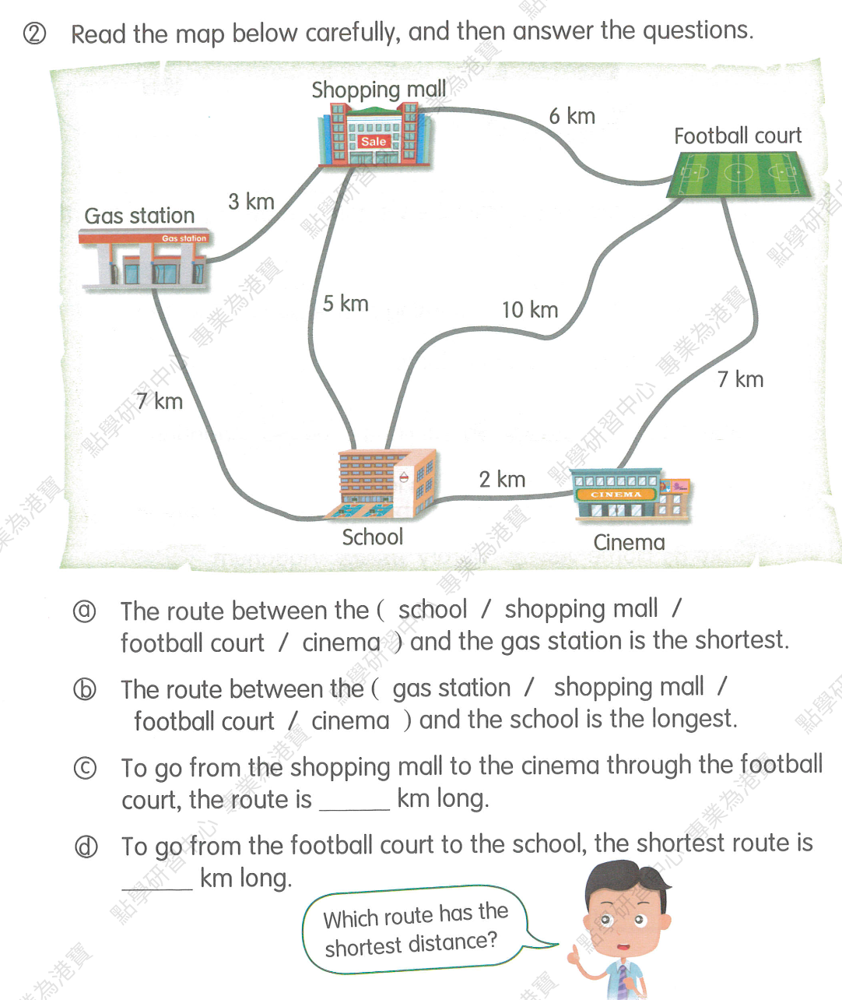
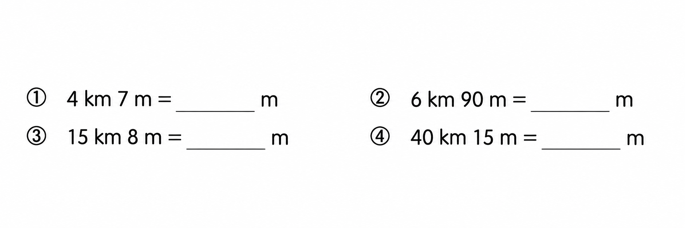
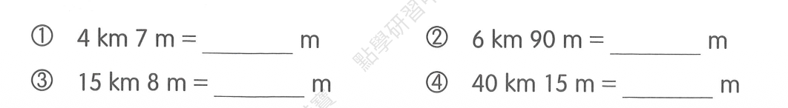
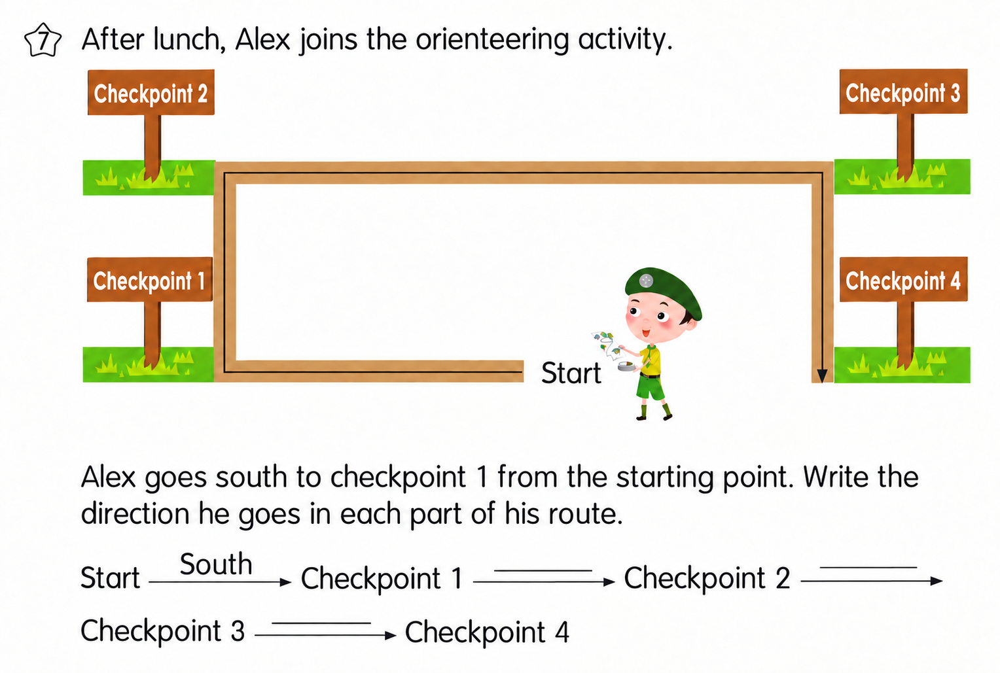
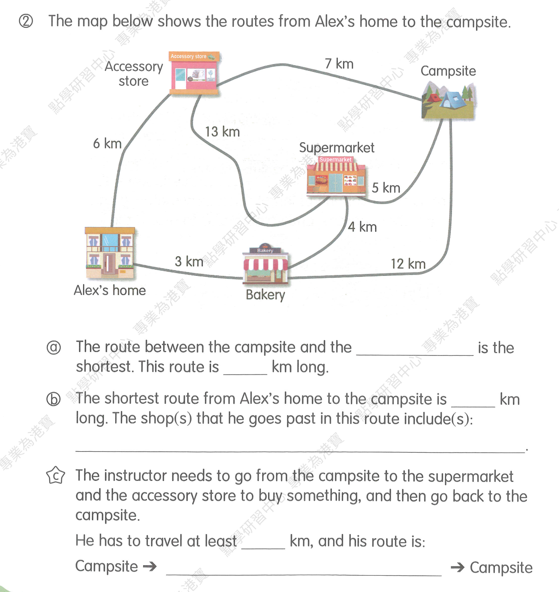

三年级 / Unit 1 五位数 / 组数与排序
MA-G3-2026-09-20-002 · 待抽取
查看答案与老师原图
20002 < 20020 < 20200 < 22000
首位必须为 2，另一张 2 分别在个位、十位、百位、千位，得到四种数。

每日随机抽 3 道，抽中即出库，抽完自动开始新一轮，不看批改结果；抽完全部重新入池，同日不重复。第 2 轮，共 11 组，待练 5 组，已抽取 6 组。
20002 < 20020 < 20200 < 22000
首位必须为 2，另一张 2 分别在个位、十位、百位、千位，得到四种数。

(a) shopping mall; (b) football court; (c) 13 km; (d) 9 km
完整地图及4小题为一组。老师答案逐项核对一致；(b) 比较图中学校相连的直达路线，最长10 km；(c) 6+7=13；(d) 经电影院7+2=9。


(1) 4007; (2) 6090; (3) 15008; (4) 40015
四小题为一组。老师答案逐项核对一致；1 km=1000 m，依次计算4000+7、6000+90、15000+8、40000+15。在原横线填空。


Checkpoint 1 → 2: west; Checkpoint 2 → 3: north; Checkpoint 3 → 4: east
完整路径图及3空为一组。老师答案核对一致；本题已知图上向左为south，因此向上west、向右north、向下east，不套用上北下南。在原横线填空。
![The map below shows the routes from Alex’s home to the campsite. (a) The route between the campsite and the ____ is the shortest. This route is ____ km long. (b) The shortest route from Alex’s home to the campsite is ____ km long. The shop(s) that he goes past in this route include(s): ____. (c) The instructor needs to go from the campsite to the supermarket and the accessory store to buy something, and then go back to the campsite. He has to travel at least ____ km, and his route is: Campsite → ____ → Campsite.](assets/question_sets/math_grade3_mistakes_2026-09-22_clean/image5.png)
(a) supermarket, 5 km; (b) 12 km, bakery and supermarket; (c) 24 km: Campsite → supermarket → campsite → accessory store → Campsite, or the reverse route
完整地图及3小题为一组。老师数值及路径核对一致；(b) 3+4+5=12；(c) 中途可再次经过营地，5+5+7+7=24，小于直接环路5+13+7=25。老师正文accessory story按原图地点名更正为accessory store；原DOCX及答案原文保留。
